以前判断一个人过得好不好，看他晒不晒。现在反过来，看他还晒不晒。
头等舱、顶奢酒店、露 logo 的包，这些「看得见」的奢华正在贬值。真正贵的东西，开始往看不见的地方跑。
一、晒出来的奢华，正在贬值
奢华过去几十年只做一件事：被看见。名牌要露出来，头等舱要发图，顶奢酒店要定位打卡。旅行一度是场炫耀，用世界上最好的东西，向别人证明我是谁。
这条路走到头了。物质不再是稀缺品，晒图这件事的含金量跟着稀释。真正有资源的人开始反着来，不晒，不定位，甚至不让人知道自己在哪。
酒店是最先察觉的一批。安缦把新店放进 Baja 的沙漠和海之间，十八间房散着摆。Soneva 三十年前就立了规矩：进门脱鞋，岛上不许飞无人机。六善把断网写进房卡。Miraval 只接待成人。京都嘉佩乐把一所停办的小学，改成了八十九间房。
它们不比谁的门头气派，比的是谁能让你消失得更彻底。
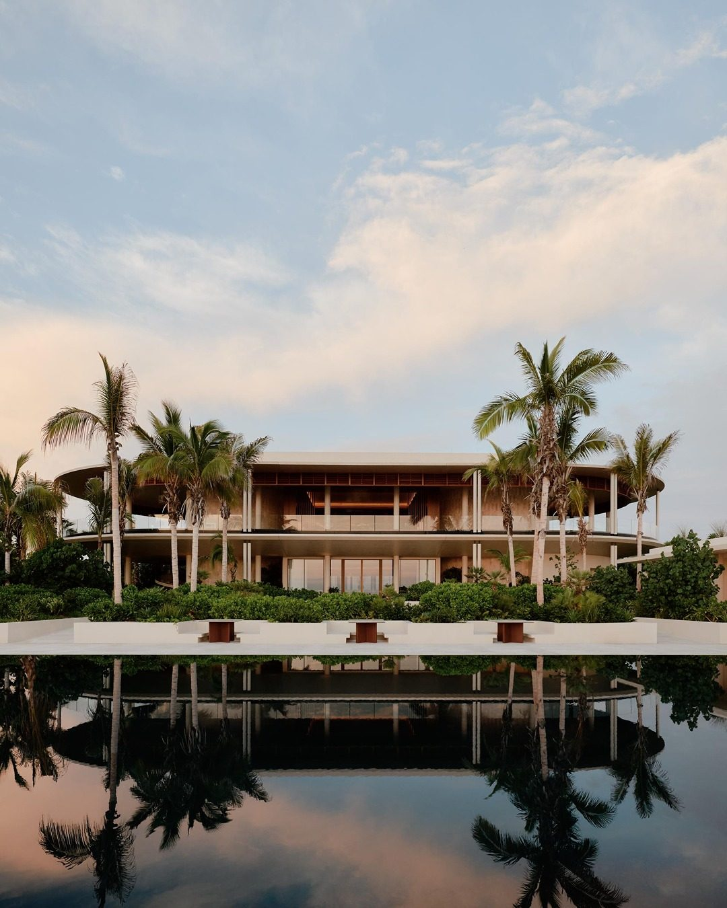
现在的奢侈，只问你能消失多久。
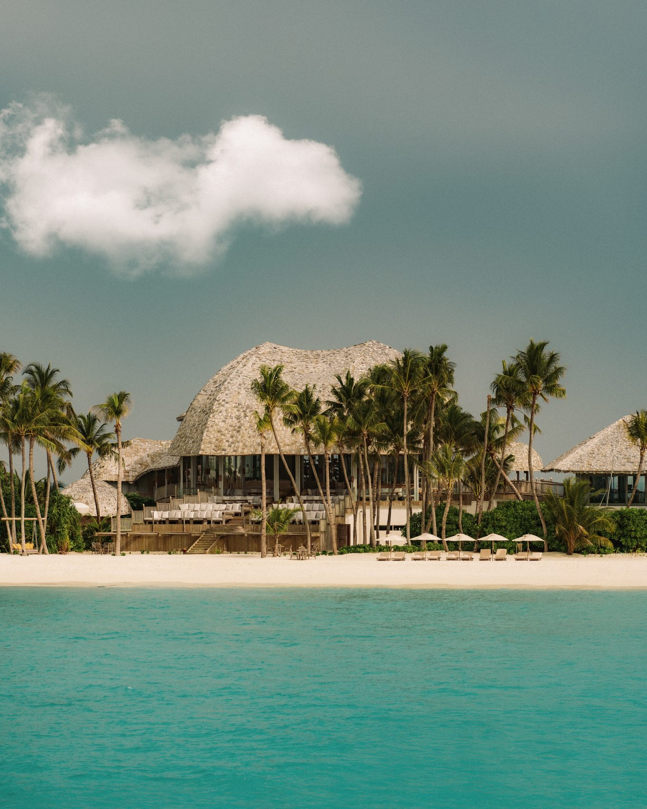
二、数据在替这个转向背书
不是感觉，是趋势。Virtuoso 在 2026 Travel Week 上放出的几组数字，比任何形容词都直接。
79% 的高端旅行者说，未来愿意考虑请一位人类旅行顾问。理由很具体：算法靠同一批信息源写行程，写出来的东西越来越像，把所有人都推进了同一条街。
秋季不再是淡季。2026 年秋季预订量同比涨 59%，9 月销售额涨 77%。有钱人不抢夏天，挑人少、天凉、别人都不在的时候出发。
每晚 1500 美元以上的酒店，预订量涨 37%，增速是平价酒店的两倍多。还有一半的顾问说，客人会主动避开过度热门的目的地。
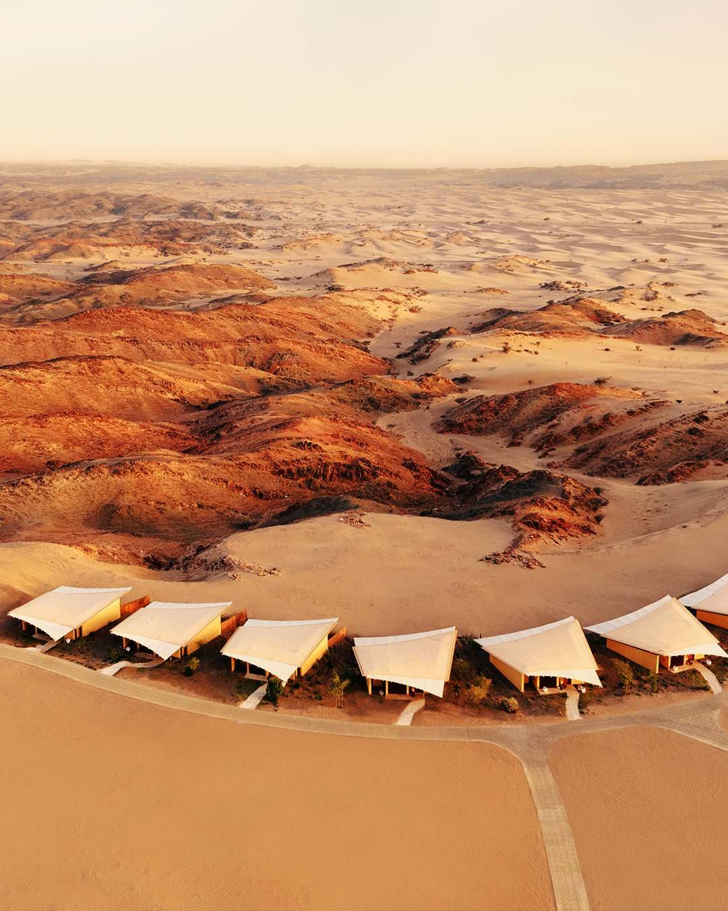
人越少，越高级。这句话正在变成高端旅行的新算法。
三、顶级酒店，都在往「没人」的方向走
看几家在做什么，比听十个趋势更清楚。
安缦去德州开了一座牧场度假村 Amansanu。选址在 Hill Country，离奥斯汀九十分钟车程，名字在梵文里是「宁静的山峰」，Olson Kundig 设计，独立亭阁加安缦第一座全服务马厩。选的不是风景，是远离城市喧嚣与信息过载。
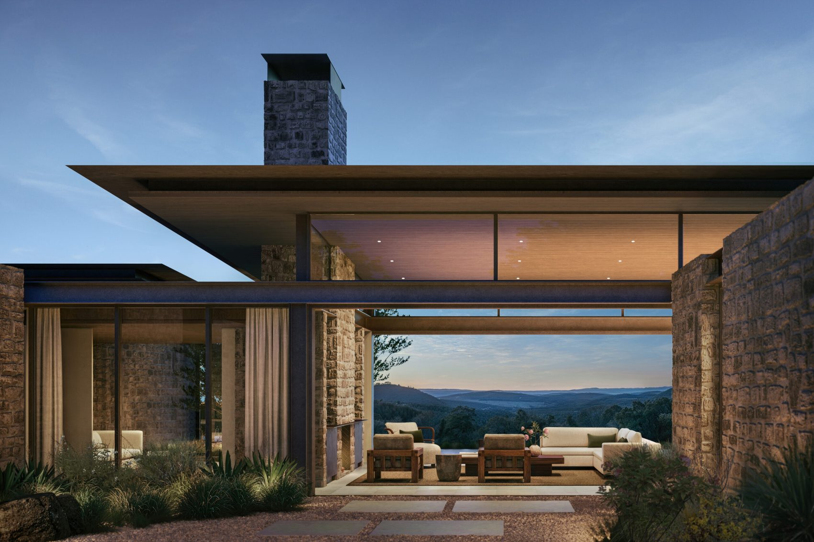
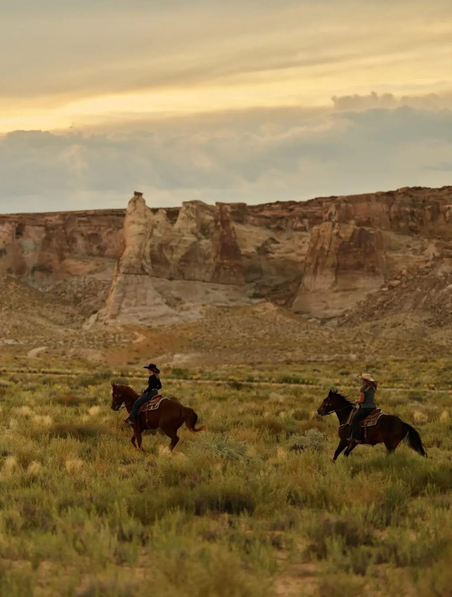
Miraval 只开门给成年人，用瑜伽、冥想、正念，把「哪怕花大价钱也要换一方安宁」的人收进来。
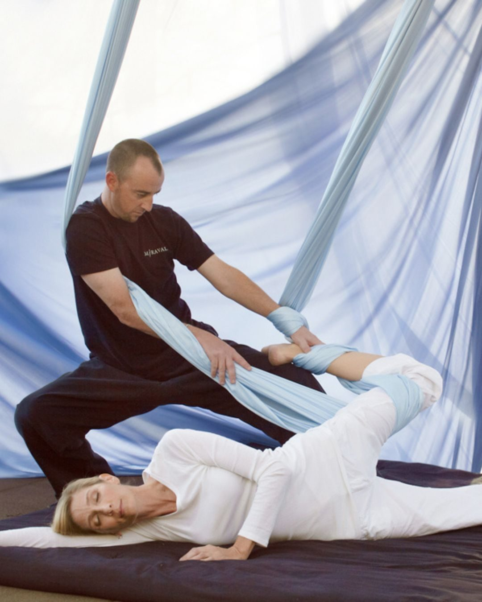
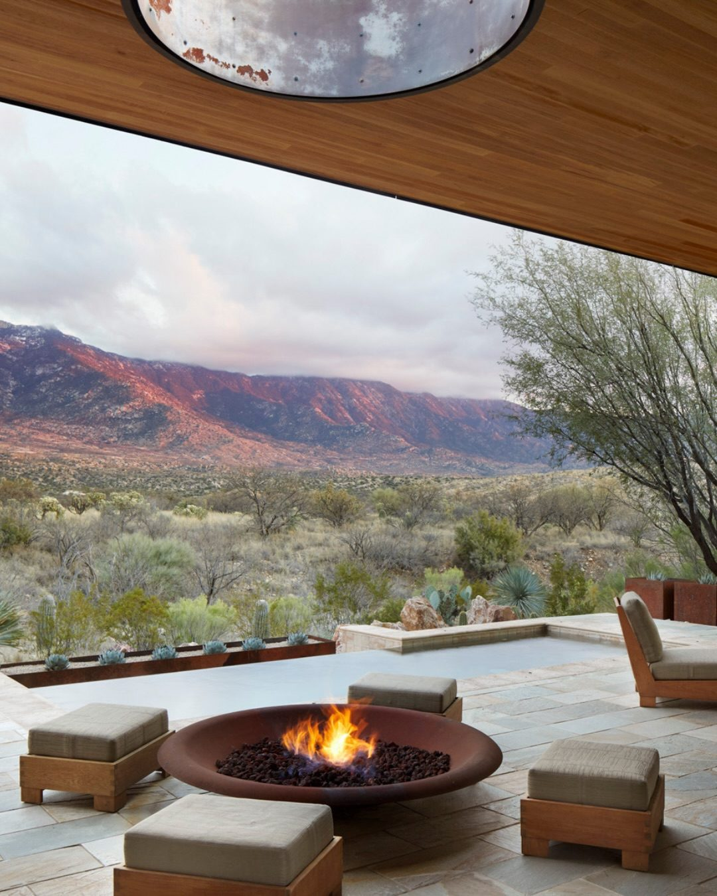
六善把「数字断联」直接写进了房卡。
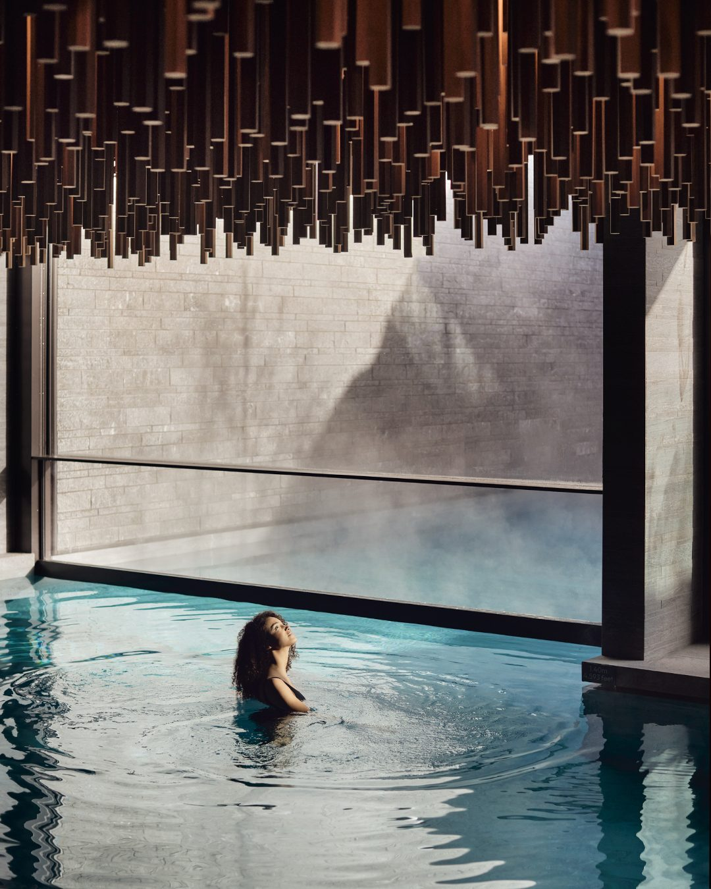
京都嘉佩乐请隈研吾操刀，把新道小学校的旧址拆成一条条巷子。八十九间房，其中六间带私人温泉，两间正对建仁寺的屋顶。2026 年 3 月开业，赶在樱花之前。
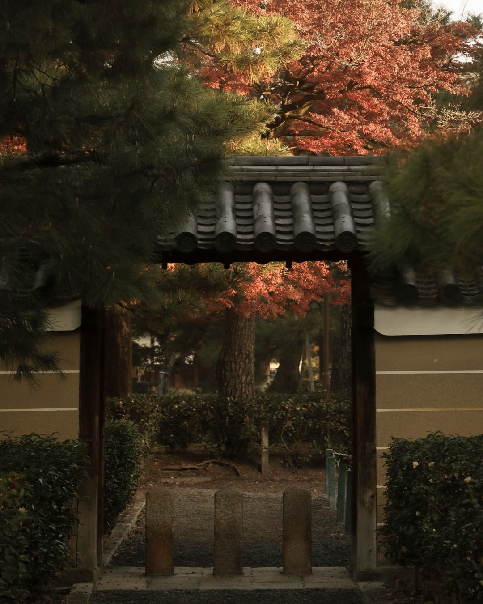
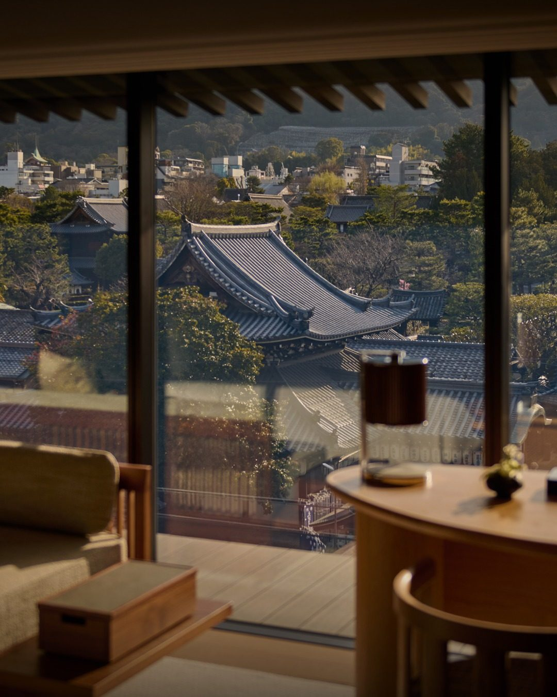
这些酒店卖的早不是床和早餐。它们卖的是同一件事：一个没人打扰你的地方。
四、为什么「不被看见」反而更贵
因为稀缺的东西变了。
过去稀缺的是物质，所以露 logo 才值钱。现在稀缺的是注意力、安静、不被打断的时间。当你的日程被会议和消息填满，能在某个角落彻底静音两天，本身就是一种身份。
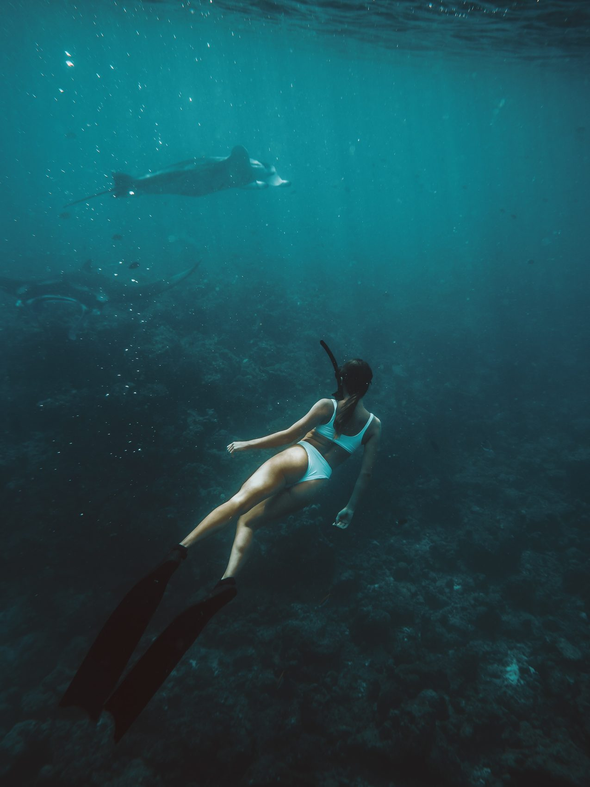
隐私成了新的身份符号。时间主权成了比名表游艇更硬的通货。这是一场从「物」到「感」的迁移：旅行不再证明你是谁，而是让你短暂地，不必证明任何事。
说到底
最贵的不是房间，是「没人打扰你」这件事本身。
今年剩下的假期，与其去挤一个打卡点，不如找个地图上没名字的地方，把自己藏两天。有些旅行，是用来给朋友圈看的；有些，是留给自己喘口气的。
下一期，我们聊聊那些「不被看见」的地方。你想看哪里，评论区点名。
curiohood · Stay Curious
事实核对：Virtuoso 数据引自《2026 Travel Week》官方报告及现场发布；Amanvari 位于墨西哥 Baja 东角，Amansanu 位于德州 Hill Country，均据安缦官网；京都嘉佩乐 89 间房、六间温泉房、2026 年 3 月 22 日开业，据品牌新闻稿。